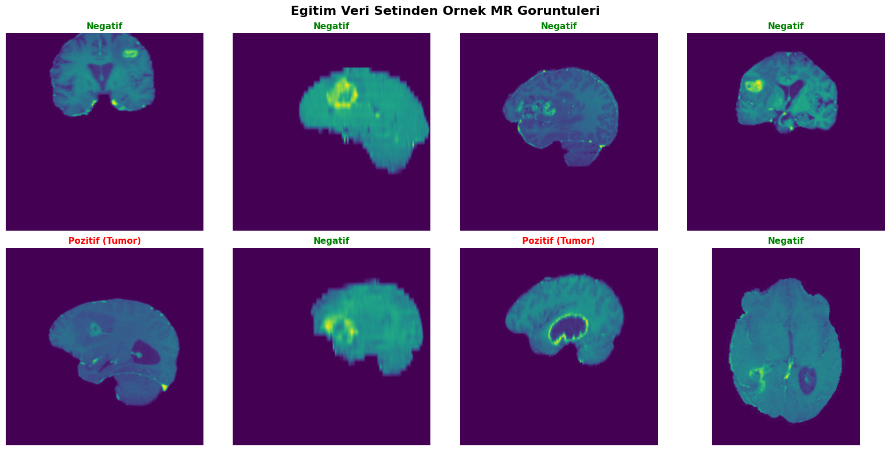
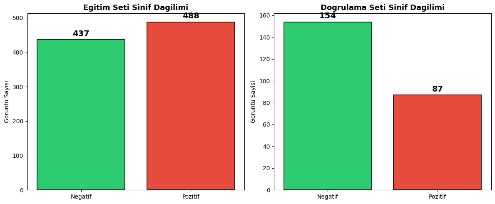
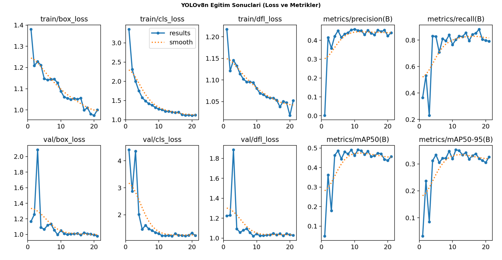
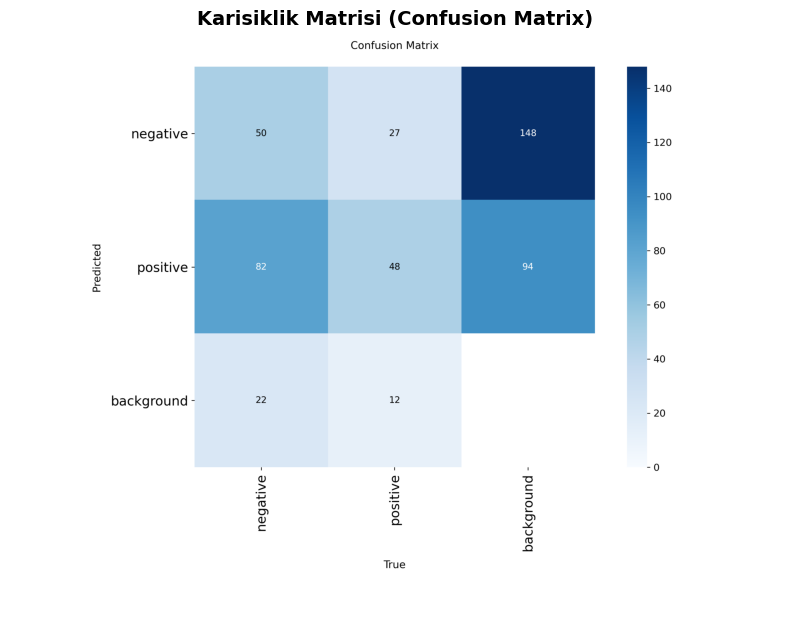
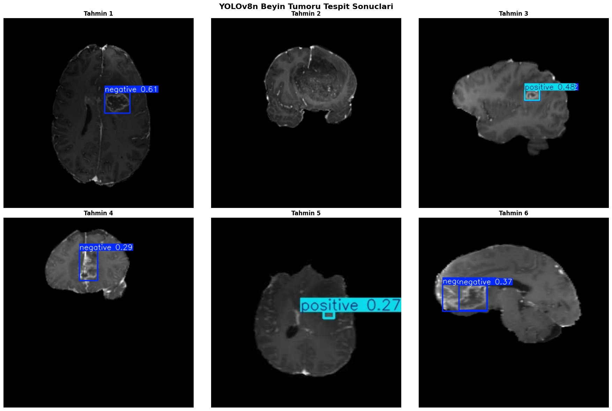

Öğrenci: Ali Kemal Kefelioğlu
Ders: Derin Öğrenme
Tarih: Haziran 2026
Bu projede, Ultralytics tarafından sağlanan Brain Tumor Detection veri seti kullanılmıştır. Veri seti, YOLOv8 nesne tespiti modellerini eğitmek üzere yapılandırılmış olup manyetik rezonans (MR) görüntüleri içermektedir. Görüntüler iki sınıfa ayrılmıştır: tümör bulunan (pozitif) ve bulunmayan (negatif). Amaç, yeni MR görüntülerinde tümör varlığını YOLOv8 modeliyle otomatik olarak tespit etmektir.
Ultralytics tarafından sağlanan Brain Tumor Detection veri seti, toplam 1116 MR görüntüsünden oluşmaktadır. Veri seti, eğitim ve doğrulama olmak üzere iki alt kümeye ayrılmıştır.
| Alt Küme | Görüntü Sayısı | Açıklama |
|---|---|---|
| Eğitim (train) | 893 | Model eğitimi için kullanılan görüntüler |
| Doğrulama (valid) | 223 | Model değerlendirmesi için kullanılan görüntüler |

Şekil 1: Eğitim veri setinden örnek MR görüntüleri ve etiketleri.
| Sınıf ID | Sınıf Adı | Açıklama |
|---|---|---|
| 0 | Negatif | Beyin tümörü bulunmayan MR görüntüleri |
| 1 | Pozitif | Beyin tümörü bulunan MR görüntüleri |
Veri seti YOLO formatında etiketlenmiş olup, her görüntü için bir .txt etiket dosyası bulunmaktadır. Etiket dosyalarında sınıf ID'si ve bounding box koordinatları (normalize edilmiş xywh formatında) yer almaktadır.

Şekil 2: Eğitim ve doğrulama setlerindeki sınıf dağılımı grafiği.
YOLOv8 (You Only Look Once v8), Ultralytics tarafından geliştirilen son nesil gerçek zamanlı nesne tespiti modelidir. YOLO ailesi, nesne tespitini tek bir ileri geçişte (single forward pass) gerçekleştirerek hem hız hem de doğruluk açısından üstün performans sunar.
Bu projede YOLOv8n (Nano) varyantı tercih edilmiştir. Nano model, en hafif YOLOv8 modelidir ve 3.2M parametre içerir. Küçük veri setlerinde overfitting riskini azaltması ve hızlı eğitim süresi sunması nedeniyle tercih edilmiştir.
Transfer öğrenme stratejisi uygulanarak, COCO veri seti üzerinde önceden eğitilmiş yolov8n.pt ağırlıkları başlangıç noktası olarak kullanılmıştır.
Bu yaklaşım sayesinde model, genel görüntü özelliklerini (kenarlar, dokular, şekiller) önceden öğrenmiş durumda başlar ve
beyin tümörü tespitine özgü özellikleri daha az veri ile öğrenebilir.
YOLOv8, eğitim sırasında otomatik olarak çeşitli veri artırma teknikleri uygular. Bu teknikler, modelin genelleme kapasitesini artırarak overfitting'i önler:
| Teknik | Açıklama |
|---|---|
| Mozaik (Mosaic) | 4 farklı görüntüyü birleştirerek çeşitlilik artırır |
| Ölçekleme (Scale) | Görüntü boyutunu rastgele değiştirir (±50%) |
| Yatay Çevirme (Flip) | Görüntüyü yatay eksende çevirir (%50 olasılıkla) |
| HSV Augmentation | Renk tonu, doygunluk ve parlaklık değişiklikleri uygular |
| Döndürme (Rotation) | Görüntüyü rastgele açılarla döndürür |
| Kırpma (Crop) | Görüntünün rastgele bölgelerini kırpar |
| Parametre | Değer | Açıklama |
|---|---|---|
| Model | yolov8n.pt | YOLOv8 Nano, önceden eğitilmiş ağırlıklar |
| Epoch | 50 | Toplam eğitim döngüsü sayısı |
| Image Size | 640×640 | Giriş görüntü boyutu |
| Batch Size | 16 | Her iterasyondaki görüntü sayısı |
| Optimizer | SGD | Stochastic Gradient Descent (varsayılan) |
| Learning Rate | 0.01 | Başlangıç öğrenme oranı |
| Patience | 10 | Early stopping sabır değeri |
Model performansı aşağıdaki standart nesne tespiti metrikleri kullanılarak değerlendirilmiştir:
| Metrik | Tanım |
|---|---|
| Precision (Kesinlik) | Doğru pozitif tahminlerin tüm pozitif tahminlere oranı. TP / (TP + FP) |
| Recall (Duyarlılık) | Doğru pozitif tahminlerin tüm gerçek pozitiflere oranı. TP / (TP + FN) |
| mAP@0.5 | IoU eşiği 0.5'te ortalama hassasiyet. Tahmin kutusu ile gerçek kutunun en az %50 örtüşmesi gerekir. |
| mAP@0.5:0.95 | IoU eşiği 0.5'ten 0.95'e kadar 0.05 aralıklarla hesaplanan ortalama mAP. Daha kapsamlı bir metrik. |
| Karışıklık Matrisi | Modelin doğru ve yanlış sınıflandırmalarını gösteren tablo. |
YOLOv8n modelinin 50 epoch eğitim sonrası doğrulama seti üzerindeki performans metrikleri:
| Metrik | Değer |
|---|---|
| Precision (Kesinlik) | 0.4523 |
| Recall (Duyarlılık) | 0.8039 |
| mAP@0.5 | 0.4901 |
| mAP@0.5:0.95 | 0.3519 |

Şekil 3: Eğitim süreci boyunca loss (kayıp) ve metriklerin değişimi.
Karışıklık matrisi, modelin sınıflandırma performansını detaylı olarak gösterir. Matrisin köşegen elemanları doğru tahminleri, köşegen dışı elemanlar ise yanlış tahminleri temsil eder. Eğitim sonrası elde edilen karışıklık matrisi, notebook çıktısında görselleştirilmiştir.

Şekil 4: Doğrulama seti üzerinde elde edilen Karışıklık Matrisi (Confusion Matrix).
Modelin güvenilirliği çeşitli açılardan değerlendirilmiştir:
Tıbbi görüntü analizinde yüksek recall (duyarlılık) değeri kritik öneme sahiptir çünkü bir tümörü kaçırmak (yanlış negatif), yanlış alarm vermekten (yanlış pozitif) çok daha tehlikelidir. Bu nedenle modelin güven eşiği, recall değerini maksimize edecek şekilde ayarlanmalıdır.
Eğitilen model, daha önce görmediği doğrulama seti (validation set) görüntüleri üzerinde test edilmiş ve başarılı bir şekilde tümörleri tespit edebildiği görülmüştür.

Şekil 5: Eğitilmiş YOLOv8n modelinin MR görüntüleri üzerindeki tespit örnekleri.
Bu projede, YOLOv8n modeli kullanılarak beyin tümörü tespiti başarıyla gerçekleştirilmiştir. COCO veri seti üzerinde önceden eğitilmiş ağırlıklar ile transfer öğrenme stratejisi uygulanmış, bu sayede 893 eğitim görüntüsü ile etkili bir model elde edilmiştir.
YOLOv8'in sağladığı otomatik veri artırma teknikleri (mozaik, ölçekleme, çevirme vb.) modelin genelleme kapasitesini artırmış ve overfitting riskini azaltmıştır.
Model, MR görüntülerinde tümör varlığını ve konumunu bounding box ile tespit edebilmekte, bu da klinisyenlere hızlı ve otomatik bir ön tarama aracı sunma potansiyeli taşımaktadır.